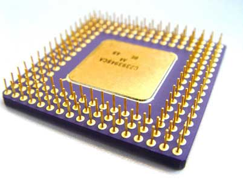

De trend kleiner, sneller, goedkoper werd vanaf 1980 in een versnelling gebracht. Dankzij Very Large Scale Integration (VLSI) werd het mogelijk om miljoenen transistoren op één en dezelfde chip te plaatsen.
Dit is een trend die vandaag de dag nog altijd verder wordt gezet. De computerindustrie ontwikkelt zich de dag van vandaag nog steeds sneller dan elke andere industrie.

De voornaamste kracht hierachter is dat chipfabrikanten elk jaar meer transistors op dezelfde oppervlakte weten te zetten.
Die verdubbeling heeft een naam: de wet van Moore. Gordon Moore, een van de oprichters van Intel, stelde vast dat het aantal transistoren op dezelfde oppervlakte ongeveer iedere achttien tot vierentwintig maanden verdubbelt. Het is geen natuurwet maar een waarneming, en de industrie heeft ze decennialang waargemaakt.
De redenen waarom schaalverkleining zo interessant is, zijn eenvoudig te begrijpen. Hoe meer transistoren, hoe complexer de schakeling kan worden gemaakt en hoe kleiner de afstand tussen twee transistoren, hoe sneller de schakeling kan werken.